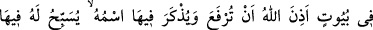
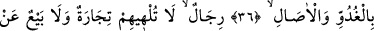
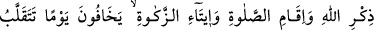
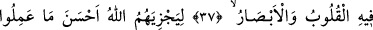
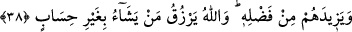
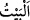
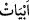
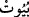
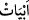
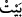

NE TİCÂRET
NE DE ALIŞ-VERİŞ
ALLAH’I ZİKİRDEN
ALIKOYMAMALI
36. (Bu kandil) birtakım evlerdedir ki, Allah (o evlerin) yücelmesine ve içlerinde
isminin anılmasına izin vermiştir. Orada sabah akşam O’nu (öyle kimseler) tesbih
eder ki;
37. Onlar, ne ticâret ne de alış-verişin kendilerini Allah’ı anmaktan, namaz
kılmaktan ve zekât vermekten alıkoyamadığı insanlardır. Onlar, kalplerin ve
gözlerin allak bullak olduğu bir günden korkarlar.
38. Çünkü (o günde) Allah, onları yaptıklarının en güzeli ile mükâfatlandıracak
ve lütfundan onlara fazlasıyla verecektir. Allah, dilediğini hesapsız rızıklandırır.
“(Bu kandil) birtakım evlerdedir ki, Allah (o evlerin) yücelmesine ve içlerinde
isminin anılmasına izin vermiştir.”
el-Müfredât’ta der ki: “
” aslında insanın geceleyin sığındığı yer anlamına gelir.
Sonraları gece kalma durumu dikkate alınmaksızın içinde insanların barındığı yerlere bu
ad verilir olmuştur. Çoğulu, “
” ve “
” şeklindedir. Fakat “
” daha çok meskene,
“
” ise şiire mahsustur. Taştan, çamurdan, yün ve kıldan yapılan barınaklara da “
”
denir. Şiir beyti de buna benzetilmiş ve bir şeyin bulunduğu mekânın o şeyin beyti
olduğu belirtilmiştir. Âyette geçen “evler”den maksad, bütün mescitlerdir. Çünkü İbn
Abbâs (r.a.) şöyle demiştir: “Mescidler Allah’ın yeryüzündeki evleridir. Yıldızlar
yeryüzüne ışık saçtıkları gibi onlar da gök ehline ışık saçarlar.”
Bir şey hakkında izin vermek, o şeyin yapılmasının câiz olduğunu bildirmek demektir.
Allah Teâlâ, mescidlerin inşâ edilmesine, onlara tâzim gösterilmesine ve şereflerinin
yüceltilmesine izin vermiştir.